Note
Go to the end to download the full example code.
Bayesian EnMap Inversion: Categorical Likelihood and Ordinal Probabilities¶
This tutorial demonstrates how to perform Bayesian inversion using surface lithological classifications (e.g., from EnMap satellite data) as observations. Unlike gravity inversion which uses continuous values, EnMap inversion deals with discrete categorical labels.
What are we doing?
We’re inferring geological parameters (like layer orientations) by comparing the predicted lithology at the surface with observed lithological labels derived from remote sensing data.
Why Bayesian Inference?
Bayesian inference allows us to: 1. Quantify Uncertainty: Instead of a single “best-fit” model, we get a posterior
distribution representing all models consistent with both our prior knowledge and the EnMap observations.
Incorporate Prior Knowledge: We can formally include geological information (e.g., typical layer dips) through prior distributions.
Handle Classification Errors: The probabilistic approach naturally accounts for potential misclassifications in the remote sensing data.
The Bayesian Framework
We seek the posterior distribution of geological parameters \(\theta\) given the observed EnMap labels \(y\):
Where: - \(p(\theta)\) is the prior, encoding our initial knowledge. - \(p(y|\theta)\) is the likelihood, describing the probability of the
labels given a specific geological configuration.
\(p(y)\) is the evidence (marginal likelihood).
The Forward Model
The relationship between parameters and observations is given by:
Where \(f(\theta)\) is the GemPy geological model that predicts rock types at the surface, and \(\epsilon\) represents the observation noise or classification uncertainty.
The Likelihood: Categorical with Ordinal Probabilities
Since the observed data consists of discrete rock type labels (e.g., 0 for Unit A, 1 for Unit B), we use a Categorical likelihood. However, GemPy’s forward model is differentiable and produces a continuous scalar field. To bridge this gap, we use an Ordinal Probabilities approach.
Scalar Field to Probabilities: We take the continuous scalar field value at the surface.
Sigmoid Boundaries: We define boundaries (thresholds) between units. We use sigmoid functions centered at these boundaries to compute the probability of a point belonging to each unit.
\[P(\text{below boundary}) = \sigma\left(\frac{\text{boundary} - \text{scalar}}{\text{temperature}}\right)\]Softmax-like behavior: The difference between cumulative probabilities at successive boundaries gives the probability mass for each discrete class.
Temperature: A ‘temperature’ parameter controls the sharpness of these probabilistic transitions. Lower temperature means sharper, more deterministic boundaries.
Why this approach?
Differentiability: The sigmoid-based mapping is fully differentiable, which is crucial for Gradient-based MCMC methods like NUTS (No-U-Turn Sampler).
Uncertainty: It naturally accounts for classification uncertainty near geological interfaces.
Import Libraries¶
We load the required scientific packages, GemPy ecosystem, and Pyro for probabilistic programming.
import os
import numpy as np
import matplotlib.pyplot as plt
import torch
import pyro
import pyro.distributions as dist
import arviz as az
import inspect
from pathlib import Path
# GemPy ecosystem
import gempy as gp
import gempy_probability as gpp
import gempy_viewer as gpv
# Configuration and helpers
from mineye.config import paths
from gempy_probability.core.samplers_data import NUTSConfig
from gempy_probability.modules.plot.plot_posterior import default_red, default_blue
from mineye.GeoModel.model_one.probabilistic_model import _modify_orientations
from mineye.GeoModel.model_one.visualization import (
gempy_viz,
plot_probability_heatmap,
compute_probability_density_fields,
plot_many_observed_vs_forward,
probability_fields_for
)
from mineye.GeoModel.model_one.probabilistic_model_likelihoods import enmap_likelihood_fn
# Set random seeds for reproducibility
seed = 4003
pyro.set_rng_seed(seed)
torch.manual_seed(seed)
np.random.seed(seed)
Step 1: Model Configuration¶
We define the spatial extent of our study area and the resolution of the geological model.
Model Extent: - X: -707521 to -675558 - Y: 4526832 to 4551949 - Z: -500 to 505 (meters)
# Define Model Extent (matching the gravity example area)
extent = [-707521, -675558, 4526832, 4551949, -500, 505]
Step 2: Load EnMap Observations¶
What is EnMap data?
EnMap (Environmental Mapping and Analysis Program) provides hyperspectral satellite imagery. In this example, we use a lithological classification derived from such data.
Units: Discrete categorical labels (0, 1, 2…).
# Define paths to find the central_xyz files in the same folder as this script
current_dir = Path(inspect.getfile(inspect.currentframe())).parent.resolve()
xyz_path = os.path.join(current_dir, 'central_xyz.npy')
labels_path = os.path.join(current_dir, 'central_labels.npy')
# Load EnMap data
xyz_enmap = np.load(xyz_path)
labels_enmap = np.load(labels_path)
labels_enmap[labels_enmap == 2] = 1 # Normalize labels to binary for this example
print(f"\nEnMap observations:")
print(f" Number of measurements: {len(xyz_enmap)}")
print(f" Classes present: {np.unique(labels_enmap)}")
print(f" Class 0 count: {np.sum(labels_enmap == 0)}")
print(f" Class 1 count: {np.sum(labels_enmap == 1)}")
EnMap observations:
Number of measurements: 57
Classes present: [0 1]
Class 0 count: 27
Class 1 count: 30
Step 3: Initial Geological Model Setup¶
We create the base GemPy model using geological orientations and points.
# Create Initial GemPy Model
simple_geo_model = gp.create_geomodel(
project_name='enmap_inversion',
extent=extent,
refinement=5,
importer_helper=gp.data.ImporterHelper(
path_to_orientations=paths.get_orientations_path(),
path_to_surface_points=paths.get_points_path(),
)
)
gp.map_stack_to_surfaces(
gempy_model=simple_geo_model,
mapping_object={"Tournaisian_Plutonites": ["Tournaisian Plutonites"]}
)
# Compute initial model
gp.compute_model(simple_geo_model)
# Visualize initial model
gpv.plot_2d(simple_geo_model, direction='z', show_data=True)
plt.title("Initial Geological Model (Surface)")
plt.show()
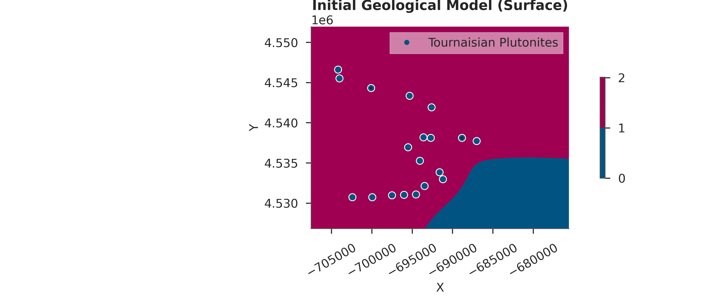
Setting Backend To: AvailableBackends.PYTORCH
/home/leguark/.venv/2025/lib/python3.13/site-packages/torch/utils/_device.py:116: UserWarning: To copy construct from a tensor, it is recommended to use sourceTensor.detach().clone() or sourceTensor.detach().clone().requires_grad_(True), rather than torch.tensor(sourceTensor).
return func(*args, **kwargs)
Step 4: Configure Custom Grid for Observations¶
We set a custom grid at the exact XYZ locations where we have EnMap labels. This ensures GemPy predicts rock types exactly where we have observations.
gp.set_custom_grid(simple_geo_model.grid, xyz_enmap)
gp.set_active_grid(
grid=simple_geo_model.grid,
grid_type=[simple_geo_model.grid.GridTypes.CUSTOM],
reset=True
)
Active grids: GridTypes.OCTREE|CUSTOM|NONE
Active grids: GridTypes.CUSTOM|NONE
Grid(values=array([[-6.86311507e+05, 4.53422704e+06, 1.31536606e+02],
[-6.84340294e+05, 4.53983741e+06, 3.46467194e+02],
[-6.96432927e+05, 4.54468963e+06, 3.20259308e+02],
[-6.91163723e+05, 4.54302168e+06, 2.81383545e+02],
[-6.89533682e+05, 4.53085323e+06, 3.19174347e+02],
[-6.95447321e+05, 4.53923089e+06, 4.63476868e+02],
[-6.91504895e+05, 4.53479566e+06, 2.90548767e+02],
[-6.81648830e+05, 4.53252118e+06, 1.20361305e+02],
[-6.94916609e+05, 4.53570545e+06, 3.06075592e+02],
[-7.05151754e+05, 4.54359030e+06, 3.37633240e+02],
[-7.02460290e+05, 4.54700201e+06, 4.37251770e+02],
[-7.00868156e+05, 4.54920067e+06, 5.18035645e+02],
[-6.98025061e+05, 4.53892762e+06, 4.07593109e+02],
[-7.01626315e+05, 4.54396938e+06, 3.42894135e+02],
[-6.98138785e+05, 4.53225582e+06, 3.96869446e+02],
[-7.01702131e+05, 4.53005716e+06, 3.33882172e+02],
[-7.05341293e+05, 4.53399959e+06, 4.36949951e+02],
[-7.04279871e+05, 4.53619825e+06, 4.22504150e+02],
[-6.78957366e+05, 4.53585708e+06, 3.16025940e+02],
[-6.77668496e+05, 4.53824528e+06, 3.09397583e+02],
[-6.82558621e+05, 4.52861666e+06, 2.47029175e+02],
[-6.78995274e+05, 4.54571314e+06, 3.88674500e+02],
[-7.04962214e+05, 4.53877599e+06, 3.19339355e+02],
[-6.80094604e+05, 4.52941273e+06, 2.73347809e+02],
[-6.83657951e+05, 4.54529616e+06, 3.62819458e+02],
[-6.96849914e+05, 4.52865457e+06, 2.98927002e+02],
[-6.86576862e+05, 4.54685038e+06, 4.12333984e+02],
[-7.01323052e+05, 4.53976160e+06, 3.07448608e+02],
[-6.89950669e+05, 4.53972369e+06, 2.46116455e+02],
[-6.80056696e+05, 4.54321122e+06, 3.16967072e+02],
[-6.95030333e+05, 4.54817716e+06, 2.64292694e+02],
[-7.03673344e+05, 4.54525825e+06, 4.04202576e+02],
[-6.95636860e+05, 4.53134603e+06, 2.56243866e+02],
[-7.05038030e+05, 4.54040603e+06, 3.10769226e+02],
[-7.01019788e+05, 4.53657733e+06, 2.82767090e+02],
[-6.79753433e+05, 4.53468193e+06, 2.85022522e+02],
[-6.99996274e+05, 4.53172511e+06, 4.26705627e+02],
[-6.97342718e+05, 4.53616034e+06, 2.89172455e+02],
[-6.89761129e+05, 4.54499289e+06, 3.07890228e+02],
[-6.79412261e+05, 4.53733549e+06, 3.21680176e+02],
[-6.94006819e+05, 4.53445449e+06, 3.16392212e+02],
[-6.84302386e+05, 4.54324913e+06, 2.76777466e+02],
[-6.85325900e+05, 4.54582687e+06, 3.95587402e+02],
[-6.86842218e+05, 4.54355239e+06, 3.20481750e+02],
[-6.95902216e+05, 4.54203607e+06, 1.92909485e+02],
[-7.03445896e+05, 4.53172511e+06, 3.84196045e+02],
[-7.05379201e+05, 4.52876829e+06, 2.67404938e+02],
[-6.94764978e+05, 4.52854085e+06, 2.83653137e+02],
[-6.99693010e+05, 4.54552360e+06, 3.34157135e+02],
[-6.99768826e+05, 4.54787390e+06, 2.46570984e+02],
[-7.04393595e+05, 4.53471984e+06, 4.75726532e+02],
[-6.99996274e+05, 4.54290796e+06, 3.11612671e+02],
[-6.87676193e+05, 4.52945064e+06, 2.93266357e+02],
[-6.84567741e+05, 4.52929901e+06, 3.24543060e+02],
[-6.83278871e+05, 4.53161139e+06, 2.89459503e+02],
[-7.05682465e+05, 4.54836670e+06, 3.66013245e+02],
[-6.88282720e+05, 4.53183884e+06, 1.89883438e+02]]), length=array([], dtype=float64), _octree_grid=RegularGrid(resolution=array([1024, 800, 32]), extent=array([-7.075210e+05, -6.755580e+05, 4.526832e+06, 4.551949e+06,
-5.000000e+02, 5.050000e+02]), values=array([[-7.07505393e+05, 4.52684770e+06, -4.84296875e+02],
[-7.07505393e+05, 4.52684770e+06, -4.52890625e+02],
[-7.07505393e+05, 4.52684770e+06, -4.21484375e+02],
...,
[-6.75573607e+05, 4.55193330e+06, 4.26484375e+02],
[-6.75573607e+05, 4.55193330e+06, 4.57890625e+02],
[-6.75573607e+05, 4.55193330e+06, 4.89296875e+02]],
shape=(26214400, 3)), mask_topo=array([], shape=(0, 3), dtype=bool), _transform=None, _base_resolution=array([64, 50, 2])), _dense_grid=None, _custom_grid=CustomGrid(values=array([[-6.86311507e+05, 4.53422704e+06, 1.31536606e+02],
[-6.84340294e+05, 4.53983741e+06, 3.46467194e+02],
[-6.96432927e+05, 4.54468963e+06, 3.20259308e+02],
[-6.91163723e+05, 4.54302168e+06, 2.81383545e+02],
[-6.89533682e+05, 4.53085323e+06, 3.19174347e+02],
[-6.95447321e+05, 4.53923089e+06, 4.63476868e+02],
[-6.91504895e+05, 4.53479566e+06, 2.90548767e+02],
[-6.81648830e+05, 4.53252118e+06, 1.20361305e+02],
[-6.94916609e+05, 4.53570545e+06, 3.06075592e+02],
[-7.05151754e+05, 4.54359030e+06, 3.37633240e+02],
[-7.02460290e+05, 4.54700201e+06, 4.37251770e+02],
[-7.00868156e+05, 4.54920067e+06, 5.18035645e+02],
[-6.98025061e+05, 4.53892762e+06, 4.07593109e+02],
[-7.01626315e+05, 4.54396938e+06, 3.42894135e+02],
[-6.98138785e+05, 4.53225582e+06, 3.96869446e+02],
[-7.01702131e+05, 4.53005716e+06, 3.33882172e+02],
[-7.05341293e+05, 4.53399959e+06, 4.36949951e+02],
[-7.04279871e+05, 4.53619825e+06, 4.22504150e+02],
[-6.78957366e+05, 4.53585708e+06, 3.16025940e+02],
[-6.77668496e+05, 4.53824528e+06, 3.09397583e+02],
[-6.82558621e+05, 4.52861666e+06, 2.47029175e+02],
[-6.78995274e+05, 4.54571314e+06, 3.88674500e+02],
[-7.04962214e+05, 4.53877599e+06, 3.19339355e+02],
[-6.80094604e+05, 4.52941273e+06, 2.73347809e+02],
[-6.83657951e+05, 4.54529616e+06, 3.62819458e+02],
[-6.96849914e+05, 4.52865457e+06, 2.98927002e+02],
[-6.86576862e+05, 4.54685038e+06, 4.12333984e+02],
[-7.01323052e+05, 4.53976160e+06, 3.07448608e+02],
[-6.89950669e+05, 4.53972369e+06, 2.46116455e+02],
[-6.80056696e+05, 4.54321122e+06, 3.16967072e+02],
[-6.95030333e+05, 4.54817716e+06, 2.64292694e+02],
[-7.03673344e+05, 4.54525825e+06, 4.04202576e+02],
[-6.95636860e+05, 4.53134603e+06, 2.56243866e+02],
[-7.05038030e+05, 4.54040603e+06, 3.10769226e+02],
[-7.01019788e+05, 4.53657733e+06, 2.82767090e+02],
[-6.79753433e+05, 4.53468193e+06, 2.85022522e+02],
[-6.99996274e+05, 4.53172511e+06, 4.26705627e+02],
[-6.97342718e+05, 4.53616034e+06, 2.89172455e+02],
[-6.89761129e+05, 4.54499289e+06, 3.07890228e+02],
[-6.79412261e+05, 4.53733549e+06, 3.21680176e+02],
[-6.94006819e+05, 4.53445449e+06, 3.16392212e+02],
[-6.84302386e+05, 4.54324913e+06, 2.76777466e+02],
[-6.85325900e+05, 4.54582687e+06, 3.95587402e+02],
[-6.86842218e+05, 4.54355239e+06, 3.20481750e+02],
[-6.95902216e+05, 4.54203607e+06, 1.92909485e+02],
[-7.03445896e+05, 4.53172511e+06, 3.84196045e+02],
[-7.05379201e+05, 4.52876829e+06, 2.67404938e+02],
[-6.94764978e+05, 4.52854085e+06, 2.83653137e+02],
[-6.99693010e+05, 4.54552360e+06, 3.34157135e+02],
[-6.99768826e+05, 4.54787390e+06, 2.46570984e+02],
[-7.04393595e+05, 4.53471984e+06, 4.75726532e+02],
[-6.99996274e+05, 4.54290796e+06, 3.11612671e+02],
[-6.87676193e+05, 4.52945064e+06, 2.93266357e+02],
[-6.84567741e+05, 4.52929901e+06, 3.24543060e+02],
[-6.83278871e+05, 4.53161139e+06, 2.89459503e+02],
[-7.05682465e+05, 4.54836670e+06, 3.66013245e+02],
[-6.88282720e+05, 4.53183884e+06, 1.89883438e+02]])), _topography=None, _sections=None, _centered_grid=None, _transform=None, _octree_levels=-1)
Step 5: Baseline Forward Model¶
We compute the model at the custom grid locations to establish a baseline comparison with the observations.
# Compute model on custom grid
sol = gp.compute_model(simple_geo_model)
# The results at custom grid are stored in solutions
output_center = sol.octrees_output[0].last_output_center
scalar_field_at_custom_grid = output_center.exported_fields.scalar_field[output_center.grid.custom_grid_slice]
print(f"\nBaseline Forward Model:")
print(f" Scalar field range: {scalar_field_at_custom_grid.min():.2f} to {scalar_field_at_custom_grid.max():.2f}")
Setting Backend To: AvailableBackends.PYTORCH
Baseline Forward Model:
Scalar field range: -0.04 to 0.05
Step 6: Define Prior Distributions¶
Prior Knowledge in Bayesian Inference
Priors encode our geological knowledge before seeing the data. Here we specify our uncertainty about the dip of the geological layers.
Prior on Dips
We use a Normal distribution:
Interpretation: - Mean (μ): 10 degrees. Our best guess for the regional dip. - Std (σ): 10 degrees. Represents significant uncertainty in our knowledge.
model_priors = {
'dips': dist.Normal(
loc=(torch.ones(simple_geo_model.orientations_copy.xyz.shape[0]) * 10),
scale=torch.tensor(10, dtype=torch.float64)
).to_event(1)
}
def set_priors_enmap(samples, geo_model):
return _modify_orientations(samples=samples, geo_model=geo_model, key="dips")
Step 7: Inspecting the Likelihood Function¶
Understanding the Likelihood Function
The likelihood function is crucial for connecting model predictions to observations. For EnMap data, we use an ordinal classification likelihood. Let’s inspect what it does internally:
# Display the function signature and docstring
help(enmap_likelihood_fn)
Help on function enmap_likelihood_fn in module mineye.GeoModel.model_one.probabilistic_model_likelihoods:
enmap_likelihood_fn(solutions: gempy_engine.core.data.solutions.Solutions)
Full Source Code
For complete transparency, here’s the full implementation of the EnMap likelihood function:
print("Likelihood function source code:")
print("=" * 60)
print(inspect.getsource(enmap_likelihood_fn))
Likelihood function source code:
============================================================
def enmap_likelihood_fn(solutions: gp.data.Solutions):
output_center: "gempy_engine.core.data.interp_output.InterpOutput" = solutions.octrees_output[0].last_output_center
scalar_field_at_custom_grid = output_center.exported_fields.scalar_field[output_center.grid.custom_grid_slice]
if not isinstance(scalar_field_at_custom_grid, torch.Tensor):
scalar_field_at_custom_grid = torch.tensor(scalar_field_at_custom_grid, dtype=torch.float64)
# DEFINE YOUR BOUNDARIES HERE
# These should match the isovalues of your interfaces.
# If your model is normalized, they might be roughly integers or fixed floats.
# Example: If Unit 0 is < 1.0, Unit 1 is 1.0 to 2.0, Unit 2 is > 2.0
# boundaries = torch.tensor([1.0, 2.0], dtype=torch.float64)
boundaries = torch.tensor(solutions.scalar_field_at_surface_points, dtype=torch.float64)
# Calculate probabilities
probs = _get_ordinal_probs(scalar_field_at_custom_grid, boundaries, temperature=0.1)
# 2. Save the class probabilities (The "Confidence")
# This will be shape (n_points, n_classes)
pyro.deterministic("probs_pred", probs.detach())
# 3. (Optional) Save the boundaries if they change per iteration
pyro.deterministic("boundaries_pred", boundaries)
# Use Categorical directly with probabilities (no need for logits)
return dist.Categorical(probs=probs).to_event(1)
Step 8: Probabilistic Model Creation¶
We combine the priors, the geological model update function, and the likelihood function into a single Pyro model.
Internal Workflow: 1. Sample \(\theta\) (dips) from priors. 2. Update GemPy model with sampled \(\theta\). 3. Compute forward model (predict scalar fields at surface). 4. Apply enmap_likelihood_fn to compute \(p(data|\theta)\).
# Create the Pyro model
prob_model = gpp.make_gempy_pyro_model(
priors=model_priors,
set_interp_input_fn=set_priors_enmap,
likelihood_fn=enmap_likelihood_fn,
obs_name="EnMap Labels"
)
# Prepare observed data as a torch tensor
labels_enmap_tensor = torch.tensor(labels_enmap, dtype=torch.float64)
Setting Backend To: AvailableBackends.PYTORCH
Step 9: Prior Predictive Check¶
Before running expensive inference, we check if our priors allow for the observed rock types. If the prior predictions don’t even cover the observations, the model might be poorly specified.
print("Running prior predictive...")
prior_data = gpp.run_predictive(
prob_model=prob_model,
geo_model=simple_geo_model,
y_obs_list=None,
n_samples=100
)
# Plotting the prior distribution of labels vs observed
pred_labels = prior_data.prior['EnMap Labels'][0]
plt.figure(figsize=(8, 4))
plt.hist([pred_labels.values.flatten(), labels_enmap],
label=['Prior Predicted', 'Observed Ground Truth'],
bins=np.arange(3) - 0.5, density=True, rwidth=0.8)
plt.xticks([0, 1])
plt.xlabel("Rock Type Label")
plt.ylabel("Density")
plt.title("Prior Predictive Check")
plt.legend()
plt.show()
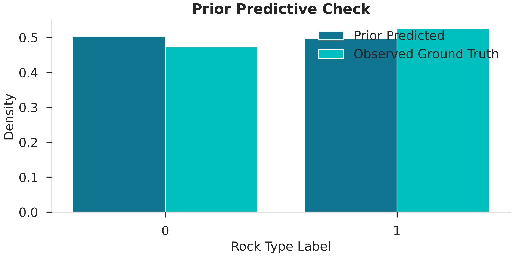
Running prior predictive...
Step 10: MCMC Inference using NUTS¶
We use the No-U-Turn Sampler (NUTS) to sample from the posterior distribution. NUTS is an efficient Hamiltonian Monte Carlo algorithm that avoids the need for manual tuning of step sizes.
RUN_SIMULATION = False
if RUN_SIMULATION:
print("Running NUTS inference...")
data = gpp.run_nuts_inference(
prob_model=prob_model,
geo_model=simple_geo_model,
y_obs_list=labels_enmap_tensor,
config=NUTSConfig(
num_samples=200,
warmup_steps=200,
target_accept_prob=0.65,
max_tree_depth=5
),
plot_trace=True,
run_posterior_predictive=True
)
data.extend(prior_data)
data.to_netcdf("arviz_data_enmap.nc")
else:
# Get the directory of the current file
current_dir = Path(inspect.getfile(inspect.currentframe())).parent.resolve()
data_path = current_dir / "arviz_data_enmap_feb2026.nc"
if not data_path.exists():
raise FileNotFoundError(
f"Data file not found at {data_path}. "
f"Please run the simulation first with RUN_SIMULATION=True"
)
# Read the data file
data = az.from_netcdf(str(data_path))
print(f"Loaded inference results from {data_path}")
Loaded inference results from /home/leguark/Projects/gempy_project/Mineye-Terranigma/examples/02_probabilistic_modeling/arviz_data_enmap_feb2026.nc
Step 11: Posterior Analysis¶
We visualize how the data has informed our knowledge of the layer dips and assess the reduction in uncertainty.
# Posterior Density Plot
az.plot_density(
data=[data, data.prior],
var_names=["dips"],
data_labels=["Posterior", "Prior"],
colors=[default_red, default_blue],
shade=0.2
)
plt.title("Update of Dip Distributions")
plt.show()
# Uncertainty Reduction Calculation
prior_std = data.prior["dips"].values.std()
post_std = data.posterior["dips"].values.std()
reduction = (1 - post_std / prior_std) * 100
print(f"\nUncertainty Reduction in Dips: {reduction:.1f}%")
# Visualize the resulting geological model uncertainty
print("\nVisualizing geological uncertainty...")
gempy_viz(simple_geo_model, data)
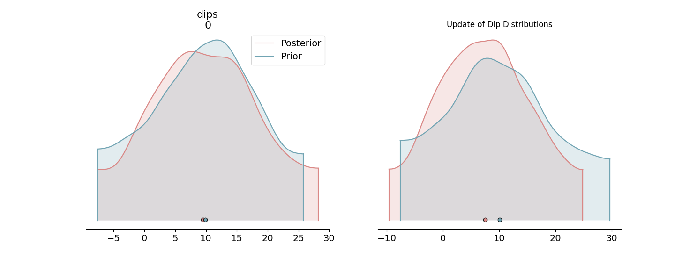
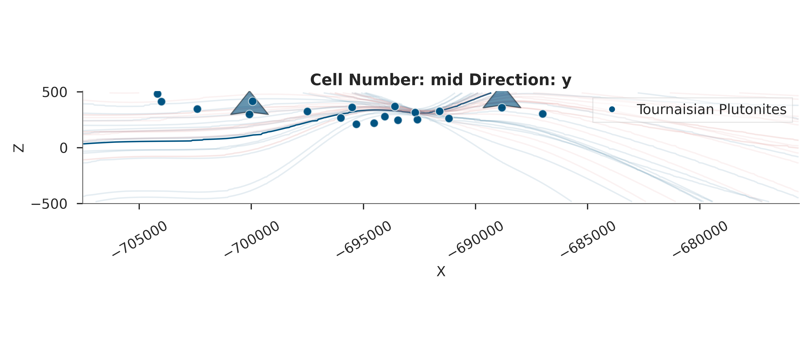
Uncertainty Reduction in Dips: 4.6%
Visualizing geological uncertainty...
Active grids: GridTypes.OCTREE|NONE
Setting Backend To: AvailableBackends.PYTORCH
/home/leguark/.venv/2025/lib/python3.13/site-packages/torch/utils/_device.py:116: UserWarning: To copy construct from a tensor, it is recommended to use sourceTensor.detach().clone() or sourceTensor.detach().clone().requires_grad_(True), rather than torch.tensor(sourceTensor).
return func(*args, **kwargs)
Setting Backend To: AvailableBackends.PYTORCH
/home/leguark/Projects/gempy_project/gempy_viewer/gempy_viewer/modules/plot_2d/drawer_contours_2d.py:38: UserWarning: The following kwargs were not used by contour: 'linewidth', 'contour_colors'
contour_set = ax.contour(
Setting Backend To: AvailableBackends.PYTORCH
Setting Backend To: AvailableBackends.PYTORCH
Setting Backend To: AvailableBackends.PYTORCH
Setting Backend To: AvailableBackends.PYTORCH
Setting Backend To: AvailableBackends.PYTORCH
Setting Backend To: AvailableBackends.PYTORCH
Setting Backend To: AvailableBackends.PYTORCH
Setting Backend To: AvailableBackends.PYTORCH
Setting Backend To: AvailableBackends.PYTORCH
Setting Backend To: AvailableBackends.PYTORCH
Setting Backend To: AvailableBackends.PYTORCH
Setting Backend To: AvailableBackends.PYTORCH
Setting Backend To: AvailableBackends.PYTORCH
Setting Backend To: AvailableBackends.PYTORCH
Setting Backend To: AvailableBackends.PYTORCH
Setting Backend To: AvailableBackends.PYTORCH
Setting Backend To: AvailableBackends.PYTORCH
Setting Backend To: AvailableBackends.PYTORCH
Setting Backend To: AvailableBackends.PYTORCH
Setting Backend To: AvailableBackends.PYTORCH
Setting Backend To: AvailableBackends.PYTORCH
Setting Backend To: AvailableBackends.PYTORCH
Setting Backend To: AvailableBackends.PYTORCH
Setting Backend To: AvailableBackends.PYTORCH
Setting Backend To: AvailableBackends.PYTORCH
Setting Backend To: AvailableBackends.PYTORCH
Setting Backend To: AvailableBackends.PYTORCH
Setting Backend To: AvailableBackends.PYTORCH
Setting Backend To: AvailableBackends.PYTORCH
Setting Backend To: AvailableBackends.PYTORCH
Setting Backend To: AvailableBackends.PYTORCH
Setting Backend To: AvailableBackends.PYTORCH
Setting Backend To: AvailableBackends.PYTORCH
Setting Backend To: AvailableBackends.PYTORCH
Setting Backend To: AvailableBackends.PYTORCH
Setting Backend To: AvailableBackends.PYTORCH
Setting Backend To: AvailableBackends.PYTORCH
Setting Backend To: AvailableBackends.PYTORCH
Setting Backend To: AvailableBackends.PYTORCH
<gempy_viewer.modules.plot_2d.visualization_2d.Plot2D object at 0x7fd9943403b0>
Probability Density Fields and Information Entropy
To visualize the spatial uncertainty of the geological structure, we compute probability density fields and information entropy.
Probability Density Field: Shows the probability of each geological unit existing at any given location.
Information Entropy: Quantifies the total uncertainty. High entropy means high uncertainty about which unit is present.
Note: The 3D visualization is already handled inside probability_fields_for() by generating a multi-panel PyVista paper-quality figure.
# Recreate the model to reset grid state
simple_geo_model = gp.create_geomodel(
project_name='enmap_inversion',
extent=extent,
refinement=5,
importer_helper=gp.data.ImporterHelper(
path_to_orientations=paths.get_orientations_path(),
path_to_surface_points=paths.get_points_path(),
)
)
gp.map_stack_to_surfaces(
gempy_model=simple_geo_model,
mapping_object={"Tournaisian_Plutonites": ["Tournaisian Plutonites"]}
)
# Prior Probability Fields
print("\nComputing prior probability fields...")
topography_path = paths.get_topography_path()
probability_fields_for(
geo_model=simple_geo_model,
inference_data=data.prior,
topography_path=topography_path
)
# Posterior Probability Fields
if hasattr(data, 'posterior'):
print("\nComputing posterior probability fields...")
probability_fields_for(
geo_model=simple_geo_model,
inference_data=data.posterior,
topography_path=topography_path
)
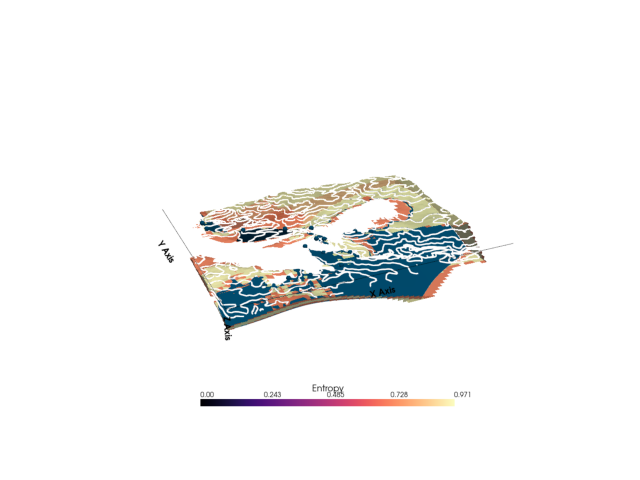
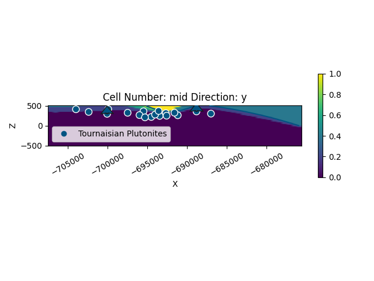
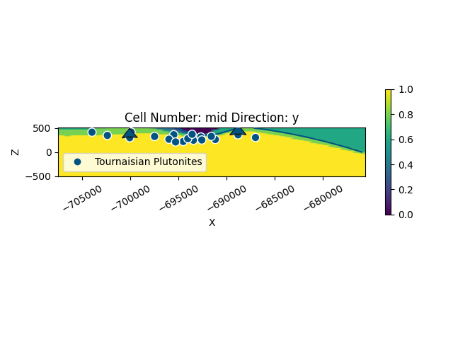
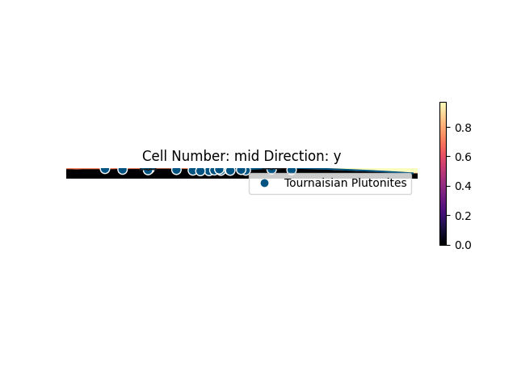
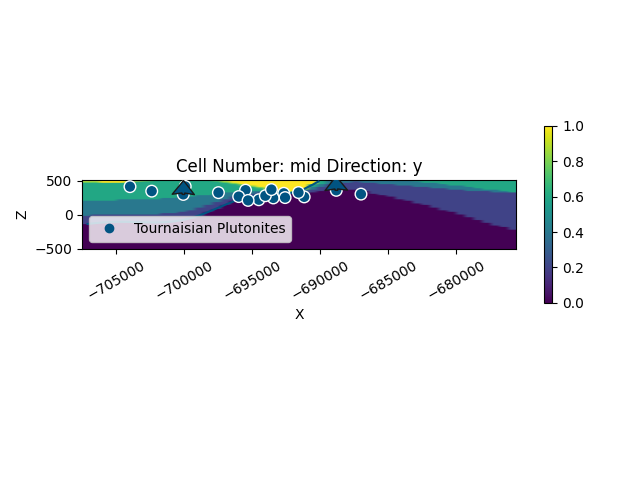
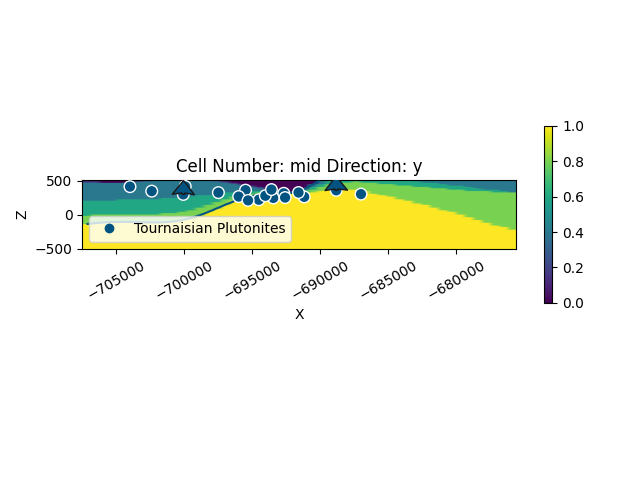
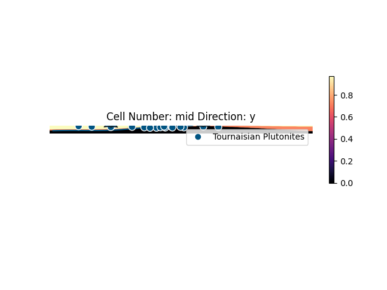
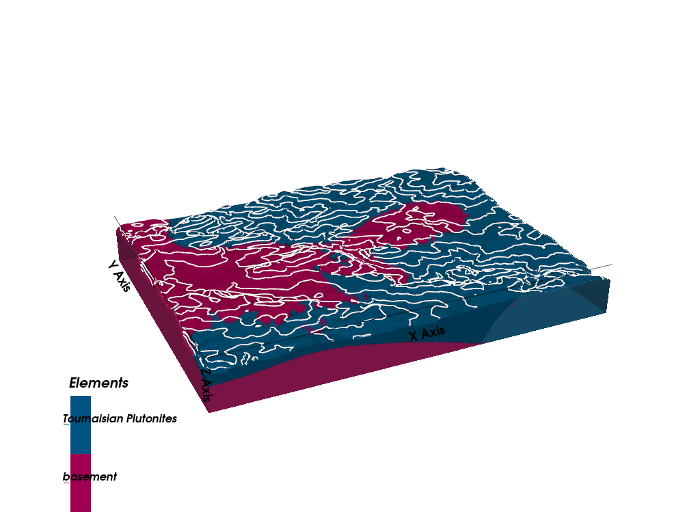
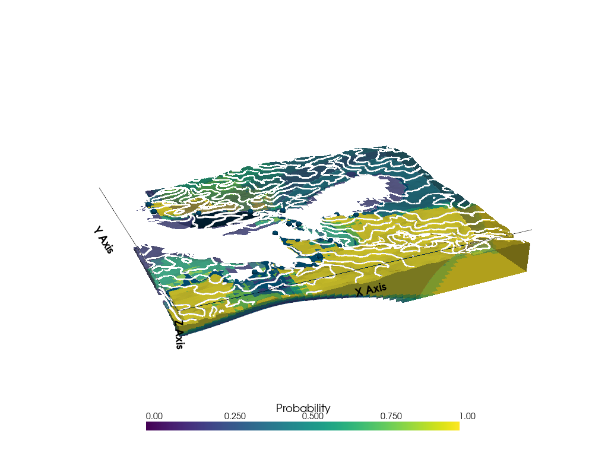
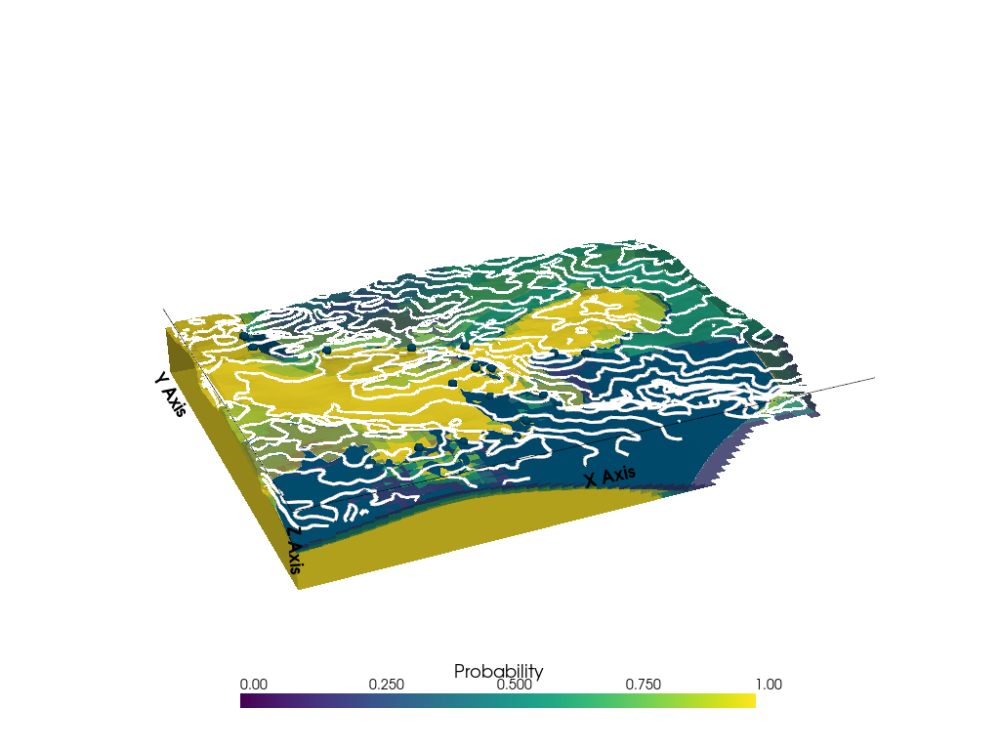
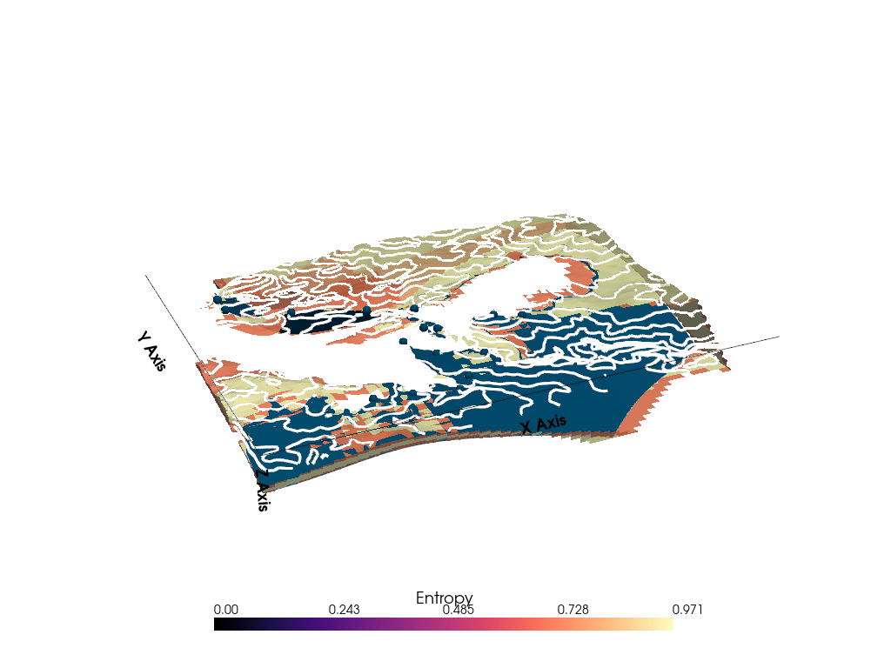
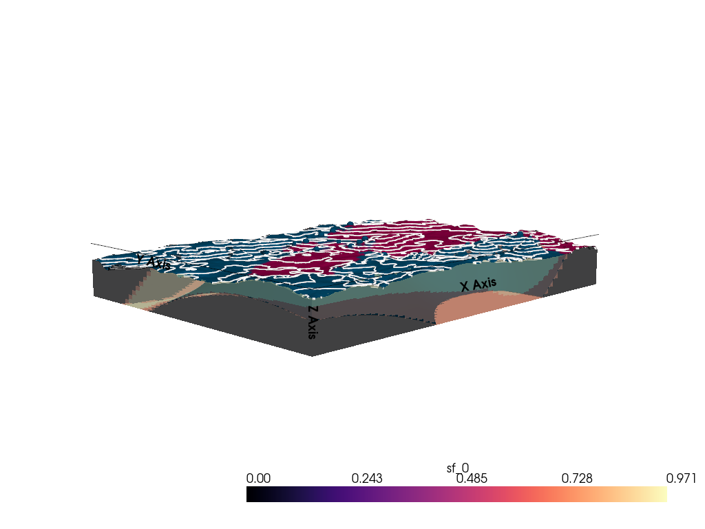
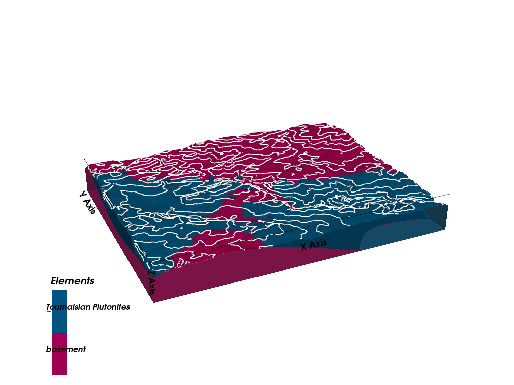
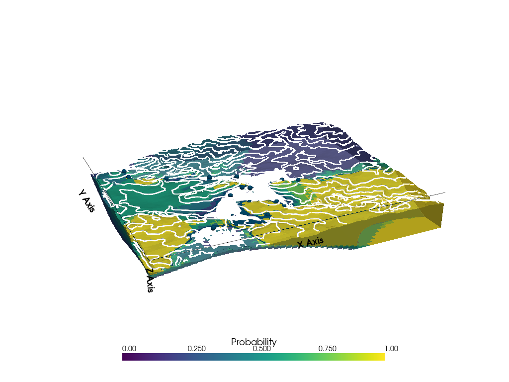
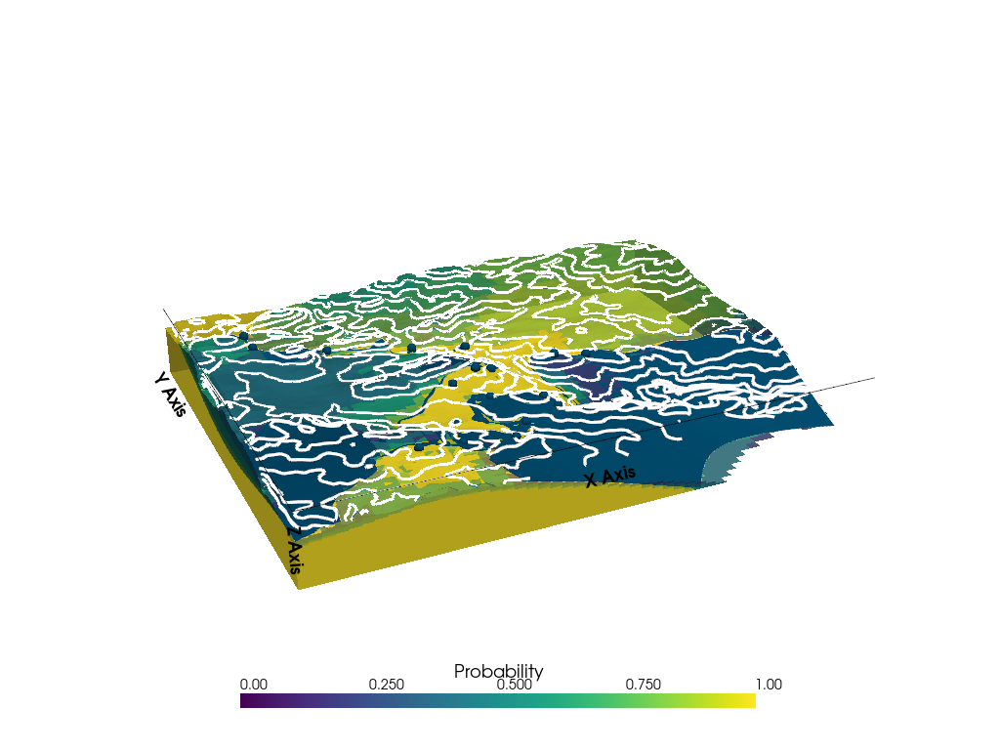
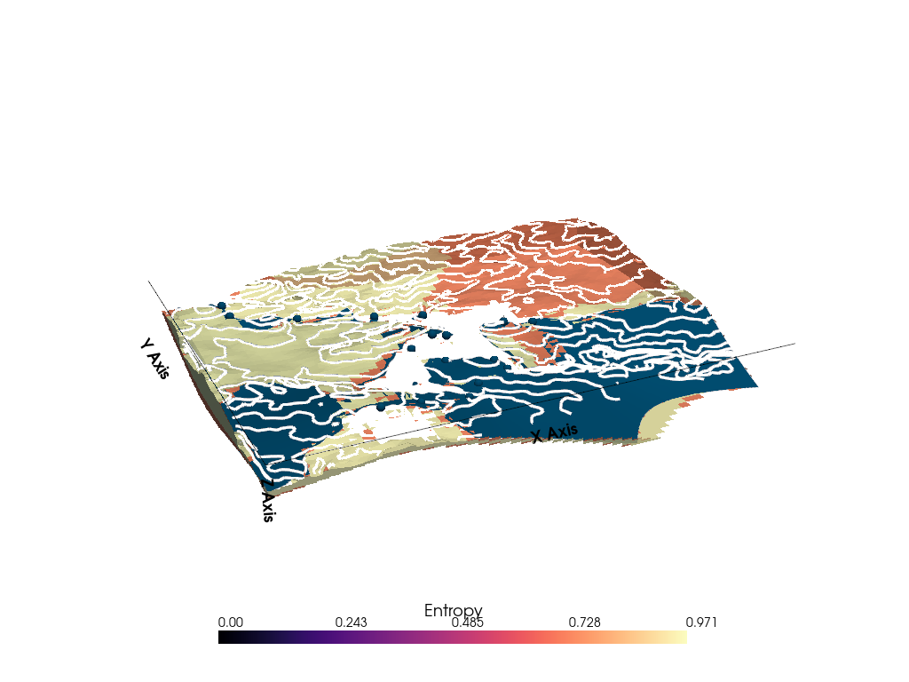
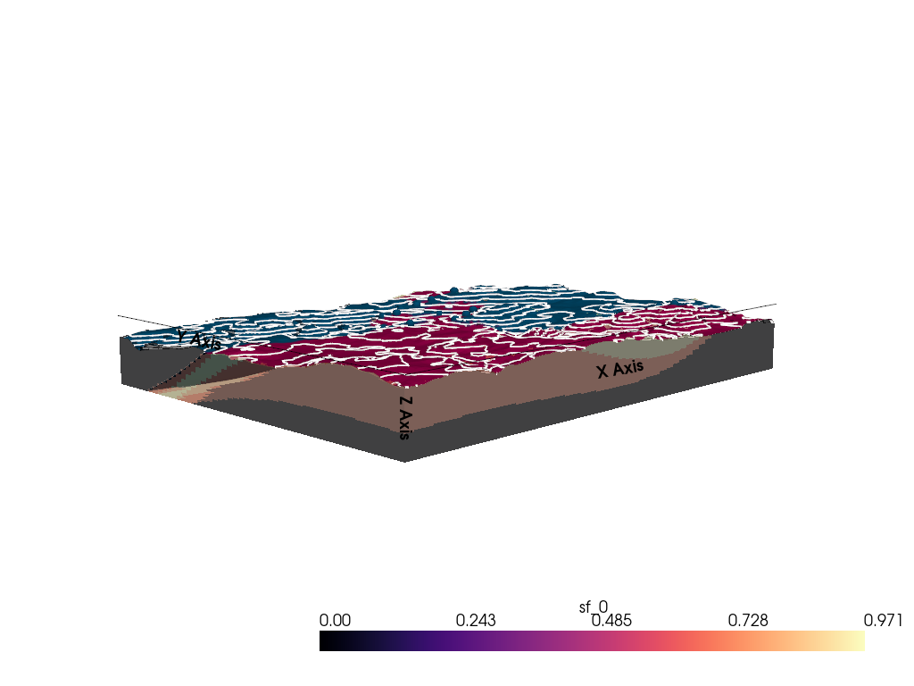
Computing prior probability fields...
Active grids: GridTypes.DENSE|NONE
Setting Backend To: AvailableBackends.PYTORCH
Setting Backend To: AvailableBackends.PYTORCH
Setting Backend To: AvailableBackends.PYTORCH
Setting Backend To: AvailableBackends.PYTORCH
Setting Backend To: AvailableBackends.PYTORCH
Setting Backend To: AvailableBackends.PYTORCH
Active grids: GridTypes.DENSE|TOPOGRAPHY|NONE
Setting Backend To: AvailableBackends.PYTORCH
[SUCCESS] Generated paper-quality figure saved to: /home/leguark/Projects/gempy_project/Mineye-Terranigma/examples/02_probabilistic_modeling/probability_fields_paper.png
/home/leguark/Projects/gempy_project/gempy_viewer/gempy_viewer/modules/plot_3d/drawer_topography_3d.py:29: PyVistaFutureWarning: The default value of `algorithm` for the filter
`StructuredGrid.extract_surface` will change in the future. It currently defaults to
`'dataset_surface'`, but will change to `None`. Explicitly set the `algorithm` keyword to
silence this warning.
polydata = grid.extract_surface()
/home/leguark/Projects/gempy_project/gempy_viewer/gempy_viewer/modules/plot_3d/drawer_surfaces_3d.py:38: PyVistaDeprecationWarning:
/home/leguark/Projects/gempy_project/gempy_viewer/gempy_viewer/modules/plot_3d/drawer_surfaces_3d.py:38: Argument 'color' must be passed as a keyword argument to function 'BasePlotter.add_mesh'.
From version 0.50, passing this as a positional argument will result in a TypeError.
gempy_vista.surface_actors[element.name] = gempy_vista.p.add_mesh(
/home/leguark/Projects/gempy_project/gempy_viewer/gempy_viewer/modules/plot_3d/drawer_topography_3d.py:29: PyVistaFutureWarning: The default value of `algorithm` for the filter
`StructuredGrid.extract_surface` will change in the future. It currently defaults to
`'dataset_surface'`, but will change to `None`. Explicitly set the `algorithm` keyword to
silence this warning.
polydata = grid.extract_surface()
/home/leguark/Projects/gempy_project/gempy_viewer/gempy_viewer/modules/plot_3d/drawer_surfaces_3d.py:38: PyVistaDeprecationWarning:
/home/leguark/Projects/gempy_project/gempy_viewer/gempy_viewer/modules/plot_3d/drawer_surfaces_3d.py:38: Argument 'color' must be passed as a keyword argument to function 'BasePlotter.add_mesh'.
From version 0.50, passing this as a positional argument will result in a TypeError.
gempy_vista.surface_actors[element.name] = gempy_vista.p.add_mesh(
/home/leguark/Projects/gempy_project/gempy_viewer/gempy_viewer/modules/plot_3d/drawer_topography_3d.py:29: PyVistaFutureWarning: The default value of `algorithm` for the filter
`StructuredGrid.extract_surface` will change in the future. It currently defaults to
`'dataset_surface'`, but will change to `None`. Explicitly set the `algorithm` keyword to
silence this warning.
polydata = grid.extract_surface()
/home/leguark/Projects/gempy_project/gempy_viewer/gempy_viewer/modules/plot_3d/drawer_surfaces_3d.py:38: PyVistaDeprecationWarning:
/home/leguark/Projects/gempy_project/gempy_viewer/gempy_viewer/modules/plot_3d/drawer_surfaces_3d.py:38: Argument 'color' must be passed as a keyword argument to function 'BasePlotter.add_mesh'.
From version 0.50, passing this as a positional argument will result in a TypeError.
gempy_vista.surface_actors[element.name] = gempy_vista.p.add_mesh(
/home/leguark/Projects/gempy_project/gempy_viewer/gempy_viewer/modules/plot_3d/drawer_topography_3d.py:29: PyVistaFutureWarning: The default value of `algorithm` for the filter
`StructuredGrid.extract_surface` will change in the future. It currently defaults to
`'dataset_surface'`, but will change to `None`. Explicitly set the `algorithm` keyword to
silence this warning.
polydata = grid.extract_surface()
/home/leguark/Projects/gempy_project/gempy_viewer/gempy_viewer/modules/plot_3d/drawer_surfaces_3d.py:38: PyVistaDeprecationWarning:
/home/leguark/Projects/gempy_project/gempy_viewer/gempy_viewer/modules/plot_3d/drawer_surfaces_3d.py:38: Argument 'color' must be passed as a keyword argument to function 'BasePlotter.add_mesh'.
From version 0.50, passing this as a positional argument will result in a TypeError.
gempy_vista.surface_actors[element.name] = gempy_vista.p.add_mesh(
[SUCCESS] Generated PyVista paper-quality figure saved to: /home/leguark/Projects/gempy_project/Mineye-Terranigma/examples/02_probabilistic_modeling/probability_fields_paper_pyvista.png
/home/leguark/Projects/gempy_project/gempy_viewer/gempy_viewer/modules/plot_3d/drawer_topography_3d.py:29: PyVistaFutureWarning: The default value of `algorithm` for the filter
`StructuredGrid.extract_surface` will change in the future. It currently defaults to
`'dataset_surface'`, but will change to `None`. Explicitly set the `algorithm` keyword to
silence this warning.
polydata = grid.extract_surface()
/home/leguark/Projects/gempy_project/gempy_viewer/gempy_viewer/modules/plot_3d/drawer_surfaces_3d.py:38: PyVistaDeprecationWarning:
/home/leguark/Projects/gempy_project/gempy_viewer/gempy_viewer/modules/plot_3d/drawer_surfaces_3d.py:38: Argument 'color' must be passed as a keyword argument to function 'BasePlotter.add_mesh'.
From version 0.50, passing this as a positional argument will result in a TypeError.
gempy_vista.surface_actors[element.name] = gempy_vista.p.add_mesh(
Computing posterior probability fields...
Active grids: GridTypes.DENSE|NONE
Setting Backend To: AvailableBackends.PYTORCH
Setting Backend To: AvailableBackends.PYTORCH
Setting Backend To: AvailableBackends.PYTORCH
Setting Backend To: AvailableBackends.PYTORCH
Setting Backend To: AvailableBackends.PYTORCH
Setting Backend To: AvailableBackends.PYTORCH
Active grids: GridTypes.DENSE|TOPOGRAPHY|NONE
Setting Backend To: AvailableBackends.PYTORCH
[SUCCESS] Generated paper-quality figure saved to: /home/leguark/Projects/gempy_project/Mineye-Terranigma/examples/02_probabilistic_modeling/probability_fields_paper.png
/home/leguark/Projects/gempy_project/gempy_viewer/gempy_viewer/modules/plot_3d/drawer_topography_3d.py:29: PyVistaFutureWarning: The default value of `algorithm` for the filter
`StructuredGrid.extract_surface` will change in the future. It currently defaults to
`'dataset_surface'`, but will change to `None`. Explicitly set the `algorithm` keyword to
silence this warning.
polydata = grid.extract_surface()
/home/leguark/Projects/gempy_project/gempy_viewer/gempy_viewer/modules/plot_3d/drawer_surfaces_3d.py:38: PyVistaDeprecationWarning:
/home/leguark/Projects/gempy_project/gempy_viewer/gempy_viewer/modules/plot_3d/drawer_surfaces_3d.py:38: Argument 'color' must be passed as a keyword argument to function 'BasePlotter.add_mesh'.
From version 0.50, passing this as a positional argument will result in a TypeError.
gempy_vista.surface_actors[element.name] = gempy_vista.p.add_mesh(
/home/leguark/Projects/gempy_project/gempy_viewer/gempy_viewer/modules/plot_3d/drawer_topography_3d.py:29: PyVistaFutureWarning: The default value of `algorithm` for the filter
`StructuredGrid.extract_surface` will change in the future. It currently defaults to
`'dataset_surface'`, but will change to `None`. Explicitly set the `algorithm` keyword to
silence this warning.
polydata = grid.extract_surface()
/home/leguark/Projects/gempy_project/gempy_viewer/gempy_viewer/modules/plot_3d/drawer_surfaces_3d.py:38: PyVistaDeprecationWarning:
/home/leguark/Projects/gempy_project/gempy_viewer/gempy_viewer/modules/plot_3d/drawer_surfaces_3d.py:38: Argument 'color' must be passed as a keyword argument to function 'BasePlotter.add_mesh'.
From version 0.50, passing this as a positional argument will result in a TypeError.
gempy_vista.surface_actors[element.name] = gempy_vista.p.add_mesh(
/home/leguark/Projects/gempy_project/gempy_viewer/gempy_viewer/modules/plot_3d/drawer_topography_3d.py:29: PyVistaFutureWarning: The default value of `algorithm` for the filter
`StructuredGrid.extract_surface` will change in the future. It currently defaults to
`'dataset_surface'`, but will change to `None`. Explicitly set the `algorithm` keyword to
silence this warning.
polydata = grid.extract_surface()
/home/leguark/Projects/gempy_project/gempy_viewer/gempy_viewer/modules/plot_3d/drawer_surfaces_3d.py:38: PyVistaDeprecationWarning:
/home/leguark/Projects/gempy_project/gempy_viewer/gempy_viewer/modules/plot_3d/drawer_surfaces_3d.py:38: Argument 'color' must be passed as a keyword argument to function 'BasePlotter.add_mesh'.
From version 0.50, passing this as a positional argument will result in a TypeError.
gempy_vista.surface_actors[element.name] = gempy_vista.p.add_mesh(
/home/leguark/Projects/gempy_project/gempy_viewer/gempy_viewer/modules/plot_3d/drawer_topography_3d.py:29: PyVistaFutureWarning: The default value of `algorithm` for the filter
`StructuredGrid.extract_surface` will change in the future. It currently defaults to
`'dataset_surface'`, but will change to `None`. Explicitly set the `algorithm` keyword to
silence this warning.
polydata = grid.extract_surface()
/home/leguark/Projects/gempy_project/gempy_viewer/gempy_viewer/modules/plot_3d/drawer_surfaces_3d.py:38: PyVistaDeprecationWarning:
/home/leguark/Projects/gempy_project/gempy_viewer/gempy_viewer/modules/plot_3d/drawer_surfaces_3d.py:38: Argument 'color' must be passed as a keyword argument to function 'BasePlotter.add_mesh'.
From version 0.50, passing this as a positional argument will result in a TypeError.
gempy_vista.surface_actors[element.name] = gempy_vista.p.add_mesh(
[SUCCESS] Generated PyVista paper-quality figure saved to: /home/leguark/Projects/gempy_project/Mineye-Terranigma/examples/02_probabilistic_modeling/probability_fields_paper_pyvista.png
/home/leguark/Projects/gempy_project/gempy_viewer/gempy_viewer/modules/plot_3d/drawer_topography_3d.py:29: PyVistaFutureWarning: The default value of `algorithm` for the filter
`StructuredGrid.extract_surface` will change in the future. It currently defaults to
`'dataset_surface'`, but will change to `None`. Explicitly set the `algorithm` keyword to
silence this warning.
polydata = grid.extract_surface()
/home/leguark/Projects/gempy_project/gempy_viewer/gempy_viewer/modules/plot_3d/drawer_surfaces_3d.py:38: PyVistaDeprecationWarning:
/home/leguark/Projects/gempy_project/gempy_viewer/gempy_viewer/modules/plot_3d/drawer_surfaces_3d.py:38: Argument 'color' must be passed as a keyword argument to function 'BasePlotter.add_mesh'.
From version 0.50, passing this as a positional argument will result in a TypeError.
gempy_vista.surface_actors[element.name] = gempy_vista.p.add_mesh(
Step 12: Summary and Conclusions¶
Workflow Recap
Prior Definition: Normal distribution on layer dips.
Likelihood Construction: Ordinal classification using sigmoids.
Model Integration: Pyro/GemPy bridge.
Inference: NUTS sampling.
Validation: Posterior density and geological visualization.
Key Insights: - Categorical data can be used for inversion by mapping continuous fields to
probabilities via sigmoid functions.
Differentiability is preserved, allowing for efficient gradient-based sampling.
Remote sensing observations can significantly reduce uncertainty in subsurface geometrical parameters.
Final workflow visualization (ASCII art)
┌─────────────────────────────────────────────────────────────────┐ │ 1. PRIOR DEFINITION │ │ dips ~ Normal(10, 10) │ └─────────────────────────────────────────────────────────────────┘
↓
┌─────────────────────────────────────────────────────────────────┐ │ 2. PROBABILISTIC MODEL CONSTRUCTION │ │ Bridge GemPy and Pyro with enmap_likelihood_fn │ └─────────────────────────────────────────────────────────────────┘
↓
┌─────────────────────────────────────────────────────────────────┐ │ 3. MCMC INFERENCE (NUTS) │ │ Sample posterior p(dips | EnMap Labels) │ └─────────────────────────────────────────────────────────────────┘
↓
┌─────────────────────────────────────────────────────────────────┐ │ 4. POSTERIOR ANALYSIS │ │ Compare prior vs posterior distributions │ └─────────────────────────────────────────────────────────────────┘ sphinx_gallery_thumbnail_number = 2
Total running time of the script: (7 minutes 58.462 seconds)